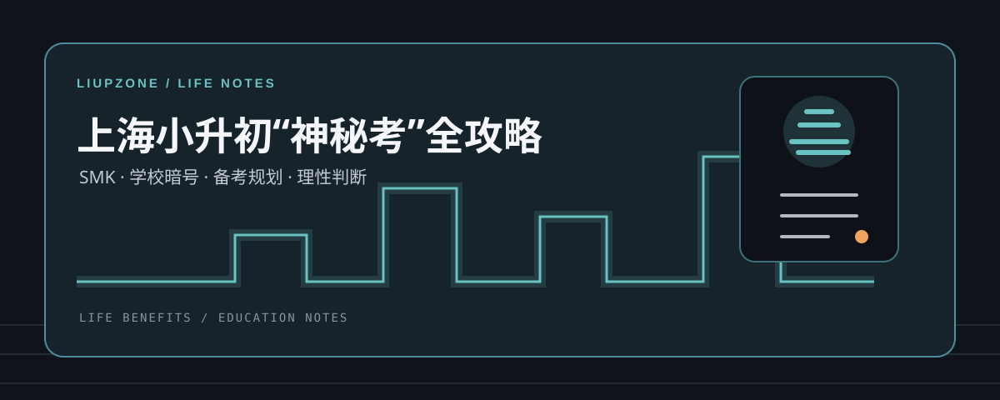

LIUPZONE / LIFE BENEFITS
生活福利
把和日常生活、升学选择有关的信息整理成可阅读、可回看的内容。每篇文章标注来源与风险边界，方便你先了解，再做判断。
栏目文章
1 篇已发布
升学信息整理
↗上海小升初“神秘考”全攻略
梳理 SMK 的概念、学校暗号、备考规划、证书准备、考试内容、获取机会的渠道与风险提醒。
把和日常生活、升学选择有关的信息整理成可阅读、可回看的内容。每篇文章标注来源与风险边界，方便你先了解，再做判断。

梳理 SMK 的概念、学校暗号、备考规划、证书准备、考试内容、获取机会的渠道与风险提醒。